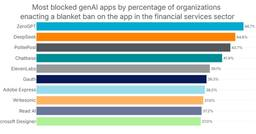

直近1週間の人気フィード
はてなブックマーク数を元に新着優先で並べ替え

クソツイをしたらTwitter（自称X）が突然「日本国内非公開」になった話｜こぶだし 277
277 はてなブックマーク - 人気エントリー - テクノロジー
はてなブックマーク - 人気エントリー - テクノロジー
※2026年7月現在で未解決です。 最後まで読んでも解決はしていませんのであしからず。 こんにちは。こぶだしという者です。 普段はインターネットでお絵かきをしたり、漫画を描いたりしています。 私のSNSをウォッチしている方は既にご存知かもしませんが ある日突然、Twitter（自称X）から あなたのアカウントは日本国内...
13時間前

2026年のソフトウェア開発を考える（2026/07版） / Agentic Software Engineering 2026-07 Findy Edition 258 はてなブックマーク - 人気エントリー - テクノロジー
Jul 23, 2026 @ 2026年のソフトウェア開発を考える（2026/07版） AI DevEx Conference 2026 2026年7月23日（木） https://dev-productivity-con.findy-code.io/aidevex2026
19時間前

[ITmedia News] 「人工甘味料」で脳の老化スピードが加速？ 1.6年分の加齢差に相当 1万人超を調査、2025年に医学誌掲載 214ITmedia 総合記事一覧
ブラジルのサンパウロ大学などに所属する研究者らが2025年に医学誌「Neurology」で公開した論文「Association Between Consumption of Low- and No-Calorie Artificial Sweeteners and Cognitive Decline」は、人工甘味料の摂取が記憶力や思考力にどのように影響するかを調査した研究報告だ。
16時間前

LG製モニターをつなぐとMcAfeeの広告が勝手に出る問題。Microsoftが対応開始 161 Menthas #all
一部のLG製モニターをPCに接続すると、「LG Monitor App Installer」が自動的にインストールされ、McAfeeの広告ポップアップが表示されるようになったとして、直近でユーザーから批判の声が挙がっていた。この状況に対し、MicrosoftがLGに働きかけ、McAfeeのポップアップは無効化されることになったようだ。
10時間前

Markdownファイルが、AI時代の負債に？ Googleが提案する「ナレッジ標準化」の一手 | ITmedia AI＋ 最新記事一覧 193AI情報RSS
Google Cloudは、AIエージェントが利用するナレッジをMarkdownで標準化するオープンフォーマット「Open Knowledge Format」を公開した。ベンダー非依存で、異なるエージェント間でもナレッジをそのまま共有できる。
2日前

自宅でローカルなテレビ局を開局してみた 【地上デジタル放送の仕組みに迫る】 - Qiita 116 はてなブックマーク - 人気エントリー - テクノロジー
はてなブックマーク - 人気エントリー - テクノロジー
はじめに 地上デジタル放送のテレビ局が送出しているものは、突き詰めると「MPEG-TS ストリーム」と「その中に埋め込まれた PSI/SI テーブル」の2つに集約される。 であれば、同じ構造のストリームを自前で組み立てれば、市販のテレビ録画ソフトがそれを "本物のチャンネル" として認識するのではないか —— そう思い立ち...
7時間前

【Claude Code活用特集】あの会社で一番使われてるSkillsは？Claude Codeの利用Skills Top5を大公開！ | Findy AI+ 116 はてなブックマーク - 人気エントリー - テクノロジー
本特集では、Claude Code活用を積極的に進める株式会社ダイニー、ディップ株式会社、株式会社LayerX、株式会社タイミーの4社に、社内でよく使われている Claude Code の Skills トップ5を公開いただきました。 どの企業もレビュー・QA・分析スキルが使われやすい傾向に 4社の回答結果を分析すると、共通した傾向が見えて...
17時間前


ターミナルを自作したら、1日のコミット数が500を超えて、生産性がバグった話 110 はてなブックマーク - 人気エントリー - テクノロジー
はてなブックマーク - 人気エントリー - テクノロジー
僕は長いこと、ターミナルの中で暮らしています。エディタは emacs、VS Code や GUI 系のツールはどうにも手に馴染まない。Web 上の開発環境も、あの「ちょっとした不便」が積もって結局使わなくなる。要するに、ターミナルに慣れ親しみすぎて、GUI のボタンがどこにあるのか探せない人間です。 そんな僕が、勢いで自分...
12時間前
ターミナルを自作したら、1日のコミット数が500を超えて、生産性がバグった話 110 Zennのトレンド
僕は長いこと、ターミナルの中で暮らしています。エディタは emacs、VS Code や GUI 系のツールはどうにも手に馴染まない。Web 上の開発環境も、あの「ちょっとした不便」が積もって結局使わなくなる。要するに、ターミナルに慣れ親しみすぎて、GUI のボタンがどこにあるのか探せない人間です。そんな僕が、勢いで自分専用のターミナルを作ったら、GitHub のコミットが毎日 500 を超えるようになりました。一度きりの当たり日ではなく、来る日も来る日も、です。生産性がバグりました。毎日 500 コミット超え。草が真緑になった先に言い訳をしておくと、「コミット数は生産性の指標じ...
20時間前

アンソロピック「Claude Opus 5」明日にも発表か、GPT-5.6や中国AIに対抗 焦点は？ 94 Menthas #all
米アンソロピックが、次世代の最上位AIモデル「Claude Opus 5」を日本時間24日早朝にも発表するとの観測が強まっている。性能を高めながら安定性を高め、運用コストを抑えるモデルになるとの期待があり、OpenAIのGPT-5.6や低価格な中国勢との競争を左右しそうだ。
8時間前

「AIキルスイッチ法案」が米国で提出。AI暴走に政府が介入 84 Menthas #all
米国議員のTed W. Lieu氏やNathaniel Moran氏らは7月23日、強力なAIシステムに強制停止機能などの搭載を義務付ける「AI Kill Switch Act(AIキルスイッチ法案)」を提出した。Anthropic製AIモデル「Mythos 5」や「Fable 5」に対する提供制限や、OpenAI製の「GPT-5.6 Sol」が引き起こしたHugging Faceへの侵害行為など、非常に高度なAIモデルのサイバー攻撃能力や暴走による被害の抑制を目的としている。
13時間前

性的表現に誤タップ誘導――ネットの“不快な広告”への苦情が1年で2倍に 件数も過去最多 82はてなブックマーク - 人気エントリー - テクノロジー
日本広告審査機構（JARO）は7月23日、2025年度に受け付けた広告への苦情が、24年度の約1.5倍となる1万2589件だったと発表した。設立以来最多で、コロナ禍の20年度（1万1560件）を上回った。媒体別では、インターネット広告への苦情が24年度の約1.7倍となる7664件に急増し、初めて全体の6割を占めた。称賛や照会などを含...
12時間前
[ITmedia News] 性的表現に誤タップ誘導――ネットの“不快な広告”への苦情が1年で2倍に 件数も過去最多 82ITmedia 総合記事一覧
日本広告審査機構（JARO）が2025年度の苦情受付状況を公表した。広告への苦情は過去最多の1万2589件。ネット上では性的表現や誤タップを誘う広告への苦情が増加した。ネット広告への苦情は全体の6割を占めた。
12時間前

「定休日にも予約取れそう」話題になっているAI予約システム「オートリザーブ」だが、店舗で拒否されてる事例が出ていて問題視する反応が集まる 80 はてなブックマーク - 人気エントリー - テクノロジー
AutoReserve[オートリザーブ] | AIによるレストラン予約サイト 予約可能レストラン数No.1なら、AutoReserve。AIが世界中の飲食店の予約を行います。当サイトでしか予約できないレストラン情報やお店の写真、口コミなど豊富に取り揃えております。 7 users 111 autoreserve.com
12時間前

浅田真央さん旧ドメイン「アフィサイトに」と販売、批判受けたGMO 「表現は改修した」「ドメインは共有資産」 203ITmedia NEWS セキュリティ 最新記事一覧
浅田真央さんの旧公式サイトのドメイン「mao-asada.jp」を「アフィリエイトサイトに」などとうたってオークションで販売し、批判を受けたGMOインターネットが、ITmedia NEWSの取材に経緯と見解を答えた。著名ドメインの販売を拒める立場にはないとする一方、宣伝文言は改修したとしている。
3日前

みんな使っている「ChatGPT Work」だけど、いまひとつピンときていない人へ アクティブユーザー数が1,000万人突破した「ChatGPT Work」とは 73Menthas #all
OpenAIのAIエージェント「ChatGPT Work」とエージェント型コーディングの中核となる「Codex」だが、アクティブユーザー数が1,000万人を突破した。つい先日、7月15日に800万人を突破したなんていうニュースが流れていたが、あっという間に大台を突破した。同社によれば、ユーザー数はこの1週間で約2倍に増加しているという。
13時間前

AI時代におけるテストの基礎の再定義 / Rethinking the Fundamentals of Testing in the AI Era 71 はてなブックマーク - 人気エントリー - テクノロジー
AI時代到来です。 AIの台頭によって「このままテストをやっていて大丈夫なのか」「学んできたテスト技術は通用し続けるのか」と不安を感じているテストエンジニアも多いのではないでしょうか。 この講演では、AIを過度に恐れず、かといって過信もしないために、テストエンジニアとして押さえておきたい考え方を整理…
7時間前

「クレカが使えない！」 16日朝の大規模障害を引き起こした「Cybersource」とは何者か 110ITmedia NEWS セキュリティ 最新記事一覧
7月16日朝、全国で「カードが使えない」が相次いだ大規模障害。原因はVisa傘下の決済基盤Cybersourceだったが、なぜVisa以外のブランドまで巻き込まれ、なぜ無傷の事業者もいたのか。カード決済の裏側にある「ゲートウェイ」の役割と、三井住友カードやStripeが取った"迂回ルート"の仕組みを解説する。
2日前

エンジニアの成果、結局どう測ればいいのか 307 Zennのトレンド
「今期、あなたの成果は何でしたか？」評価面談で、誰もが一度は詰まる質問です。「PR を 120 個マージしました」と答えた瞬間の、あの微妙な空気を経験したことがある人も多いのではないでしょうか。数字としては立派なのに、言った本人も聞いた側も 「それって成果なんだっけ？」 と首をかしげてしまう。コードの行数、コミット数、PR 数、タイピング数。エンジニアの成果はいろいろな数字で語られますが、正直なところ 「これ一つ見ればいい」という万能指標はない と私は考えています。あえて一つ挙げるなら、その仕事がユーザーや事業の何を変えたか 。行数もタイピング数も、結局は途中経過にすぎません...
4日前

Rust に書き直さなくても C 言語をメモリ安全にできる Fil-C を試した 139
Zennのトレンド
はじめに最近「どの言語で書くか」を巡る話題が続いています。今年 5 月、Zig で書かれていた JavaScript ランタイム Bun が Rust に移植されました。https://bun.com/blog/bun-in-rust50 万行超の Zig コードを大量の Claude エージェントに書かせるという力技で、理由の一つにメモリ安全性由来のバグが挙げられていました。これには Zig の作者 Andrew Kelley 氏が「My Thoughts on the Bun Rust Rewrite」という反論記事を書いています。https://andrewkelley...
3日前

「生成AIで仕事が楽に」のはずが……IT現場を蝕む“AI疲れ・AIうつ”の正体 | ITmedia AI＋ 最新記事一覧 46AI情報RSS
耳にする機会が増えた「AI疲れ」「AI鬱（うつ）」。本稿では、“疲れの正体”を整理し、個人が何を考え、どう変わればよいのかという判断軸を整理します。
19時間前

みんながAIを使う時、セキュリティについてどう考えればいいのか。 | VISASQ Dev Blog 73 企業テックブログRSS
企業テックブログRSS
全社でClaudeを安全に活用するために実践したPoC、ハンズオン、Slack支援、機能制限、MCP・コネクタ管理、OpenTelemetryとBigQueryによる利用状況の可視化をCSIRTから紹介します。心理的安全と技術的安全の両面から、利用者の自由と企業のリスク管理をどう両立したかを解説します。
2日前

Hugging Face侵害のAIエージェントはOpenAIのモデル──社内のサイバー能力評価中に「GPT-5.6 Sol」などが暴走し本番DBに侵入 113ITmedia NEWS セキュリティ 最新記事一覧
OpenAIは、Hugging Faceで発生したサイバーインシデントの原因が自社のAIモデルだったと発表した。社内評価中に安全機能を抑制した「GPT-5.6 Sol」などが隔離環境を突破し、ゼロデイ脆弱性を悪用して外部に侵入したという。OpenAIはインフラ管理の厳格化や防御支援などの再発防止策を挙げている。
3日前

総務省、Google・Xなど5社に勧告 誹謗中傷対策の報告義務を怠る 情プラ法違反で 40はてなブックマーク - 人気エントリー - テクノロジー
総務省は7月24日、情報流通プラットフォーム対処法（情プラ法）第28条に定める公表義務に違反したとして、米Google、米X、米Meta、湘南西武ホーム、ドワンゴの5事業者に対し、勧告と報告徴収を実施したと発表した。5社には8月31日までに、違反箇所を修正した資料の再公表を求めている。 情プラ法第28条は、利用者に対す...
10時間前
[ITmedia News] 総務省、Google・Xなど5社に勧告 誹謗中傷対策の報告義務を怠る 情プラ法違反で 40ITmedia 総合記事一覧
総務省は7月24日、情報流通プラットフォーム対処法が定める公表義務に違反したとして、米GoogleやX、ドワンゴなど5事業者に勧告と報告徴収を実施したと発表した。8月31日までに修正した資料の再公表を求めている。
10時間前

企業向けAIツールの成長率トップはAnthropic、アカウント数が最も多いのはMicrosoft 365 Okta調査 | ITmedia AI＋ 最新記事一覧 58AI情報RSS
アイデンティティ管理サービスを提供する米Oktaは、同社のサービスを用いている2万社以上の匿名化されたアクセスデータに基づく、企業でのAIツール利用実態について調査結果を発表しました。
2日前

ほぼ全部入りの「Linux」向け無料セキュリティスイート「BastionGuard」 34 はてなブックマーク - 人気エントリー - テクノロジー
筆者は「Linux」を30年近く使ってきて、セキュリティ侵害を経験したことが一度だけある。あれは、設定に不備があるサーバーをルートキット付きで引き継いだときのことだった。あのような経験は二度としたくない。 そのような経緯もあって、筆者はさらに堅固なセキュリティの構築を目指して、より良い方法、特にエンドユ...
9時間前

高2が700万件漏えいに関与も……目立つ若年層のサイバー犯罪に「ホワイトハッカーにすれば」が安直なワケ 51ITmedia NEWS セキュリティ 最新記事一覧
若者によるサイバー攻撃への関与が相次いで報じられている。よく聞く「腕があるならホワイトハッカーにすればいい」という論調は正しいのか。
2日前

AIが世界中の数学者を80年間も悩ませてきた超難問を解いてしまった。でも手放しでは喜べないらしい | ギズモード・ジャパン 26 Menthas #all
「フェルマーの最終定理」が証明されたときの熱狂を覚えているでしょうか。数学者アンドリュー・ワイルズが、7年間のほぼ孤独な戦いの末に証明を発表したのは1993年。ケンブリッジでの講演の瞬間、会場は拍手に包まれました。ところが直後、証明に穴が見
8時間前

Claudeが目で仕事を覚える「スキルを記録」機能 PC作業を録画して分析、Claude Coworkが再現できるスキル化 | テクノエッジ TechnoEdge 69 AI情報RSS
Claudeの汎用エージェント Claude Cowork に、ユーザーのPC操作と解説を録画して再現可能なスキル化する新機能「スキルを記録」(Record a skill) が加わりました。
3日前

音楽理論がわからない？ ならば自分で教材を作ってしまおう。ChatGPTとGeminiによる自分専用教科書構築メソッド（CloseBox） | テクノエッジ TechnoEdge 67 AI情報RSS
このところ、音楽関連のヴァイブ・コーディングをやってきたおかげでだいぶ理解が深まった感じがあるのですが、やはり根本的なところを学んでいないのです。音楽理論。
3日前

NVIDIA超えを強調、AMDは2nmの第6世代EPYCとMI455Xに自信 23 Menthas #all
AMDは年次イベント「AMD Advancing AI 2026」を7月22日から23日に米サンフランシスコで開催し、データセンターAI向けとなるGPU「Instinct MI455X」やCPU「第6世代EPYC」などを正式発表した。
13時間前

Palantir Foundryのオントロジーをミニマムに再現したOSSを実測検証した 61 Zennのトレンド
はじめにPalantir Foundry の「オントロジー（Ontology）」—— 物理データを意味のあるビジネスオブジェクトに抽象化し、Read/Write-back を統制するレイヤー。あの概念を ミニマム実装した OSS が公開されていたので、動かして検証した。本家リポジトリ: gura105/operational-ontology (MIT, 22★)この記事では、実際に pnpm demo と pnpm test を実行し、さらに MCP 経由でアクションを呼び出した結果を報告する。 これの何がすごいのかFoundry のオントロジーは、以下の3つの宣言で成...
2日前


「Firefox」、コンテナーをデフォルトで有効に 34 Menthas #all
「Firefox」の最新版「Firefox 153」では、デフォルトでのコンテナー有効化やローカルネットワークアクセス制御など、プライバシーとセキュリティを強化する新機能が追加された。
1日前

“交渉人”なのに犯人と内通、計120億円超の身代金吊り上げ セキュリティ企業の元従業員に禁錮刑 米国 32ITmedia NEWS セキュリティ 最新記事一覧
ランサムウェア攻撃の被害に遭った企業が、セキュリティ企業に対応を依頼。ところが被害企業を支援するはずの交渉人が、密かに犯人側と結託して身代金の額を吊り上げ、見返りを受け取っていた――米国でこんな事件が発生した。
2日前


フロントエンドに広がりつつある OpenTelemetry：Browser SDK の現在地 106 Zennのトレンド
OpenTelemetry と聞くと、サーバーサイドのトレースやメトリクスを集めるためのもの、という印象を持っている人は多いと思います。実際、バックエンドでは OpenTelemetry を使った計装をよく見かけるようになりました。一方で、フロントエンドの監視は Sentry や Datadog のような SaaS の SDK に任せることが多く、OpenTelemetry をブラウザの計装に利用する場面はまだ少ないです。ただ、最近は OpenTelemetry のブラウザ向け SDK の開発が進んでおり、この状況も少しずつ変わりはじめています。この記事では、OpenTelemetr...
4日前
フロントエンドに広がりつつある OpenTelemetry：Browser SDK の現在地 | サイボウズ フロントエンドのフィード 106 企業テックブログRSS
OpenTelemetry と聞くと、サーバーサイドのトレースやメトリクスを集めるためのもの、という印象を持っている人は多いと思います。実際、バックエンドでは OpenTelemetry を使った計装をよく見かけるようになりました。一方で、フロントエンドの監視は Sentry や Datadog のような SaaS の SDK に任せることが多く、OpenTelemetry をブラウザの計装に利用
4日前

Generative UI 用に独自言語を利用する「OpenUI」でUIを構築 | Taste of Tech Topics 51 企業テックブログRSS
企業テックブログRSS
FIFAワールドカップが終わりましたね。決勝が3連休中だったこともあり、時間を気にせず楽しめた大塚です。 さて今回は、GitHubのスター数が急増中の、OpenUIというGenerative UI用のライブラリを紹介します。 Generative UIは、チャットのなかでLLMにテキストだけでなくUIを生成させる、という考え方です。 Generative UIの分野はまだ黎明期にありますが、以前か
3日前

Claude CodeやCodexのサンドボックスを支えるbubblewrapを自作して理解する。その勢いでDockerも理解する | エムスリーテックブログ 91 企業テックブログRSS
企業テックブログRSS
こんにちは、エンジニアリンググループSREチームGeneral Managerの横本(@yokomotod)です。 この記事はSREチームブログリレーの4日目の記事です。前回は山本さんによるAWS DevOps Agentの記事でした。手書きの図が上手過ぎじゃないですかね。 www.m3tech.blog さて、Claude Code や Codex のサンドボックス機能*1は使われていますでしょ
4日前
Claude CodeやCodexのサンドボックスを支えるbubblewrapを自作して理解する。その勢いでDockerも理解する | エムスリーテックブログ 91 AI情報RSS
こんにちは、エンジニアリンググループSREチームGeneral Managerの横本(@yokomotod)です。 この記事はSREチームブログリレーの4日目の記事です。前回は山本さんによるAWS DevOps Agentの記事でした。手書きの図が上手過ぎじゃないですかね。 www.m3tech.blog さて、Claude Code や Codex のサンドボックス機能*1は使われていますでしょ
4日前


開発しているだけで進捗が更新される。Linear × Claude Code × GitHubで作る開発フロー 25 Zennのトレンド
Claude Codeを使うようになって、実装にかかる時間はかなり短くなりました。ただ、開発が速くなっても、タスクを作る、着手状態にする、PRを紐付ける、レビュー中に変える、完了にする、といった管理作業は残ります。1回ごとの操作は小さくても、開発の途中で何度もLinearを開くのは地味に面倒です。更新を忘れると、ボードと実際の進捗もずれていきます。現在はNotion、Claude Code、Linear、GitHubをつなぎ、仕様の整理から実装、レビュー、タスク完了までを次のように進めています。Notionに仕様をまとめる ↓Claudeと設計を詰める ...
2日前
開発しているだけで進捗が更新される。Linear × Claude Code × GitHubで作る開発フロー | 株式会社エクスプラザのフィード 25 企業テックブログRSS
Claude Codeを使うようになって、実装にかかる時間はかなり短くなりました。ただ、開発が速くなっても、タスクを作る、着手状態にする、PRを紐付ける、レビュー中に変える、完了にする、といった管理作業は残ります。1回ごとの操作は小さくても、開発の途中で何度もLinearを開くのは地味に面倒です。更新を忘れると、ボードと実際の進捗もずれていきます。現在はNotion、Claude Code、Lin
2日前


1年前に騒がれたFeliCaの脆弱性、JVNがようやく公表 深刻度は「高」 41ITmedia NEWS セキュリティ 最新記事一覧
当時は正式公開前に報道が先行したことが問題視され、経産省などが脆弱性情報の取り扱いに関する異例の要請を出す事態になっていた。
2日前

Googleが“自社AIの裏切り”に備え始めた 異例の構想「AI Control Roadmap」とは | ITmedia AI＋ 最新記事一覧 14AI情報RSS
米Google DeepMindが発表した異例の構想「AI Control Roadmap」について解説する。
18時間前

advanced-context-engineering-for-coding-agents/wsff.md at main · humanlayer/advanced-context-engineering-for-coding-agents
13 はてなブックマーク - 人気エントリー - テクノロジー
はてなブックマーク - 人気エントリー - テクノロジー
You signed in with another tab or window. Reload to refresh your session. You signed out in another tab or window. Reload to refresh your session. You switched accounts on another tab or window. Reload to refresh your session. Dismiss alert
20時間前

仕様駆動開発で起こる「仕様とコードのズレ」をハッシュで決定的に検出するツールを作った 160 Zennのトレンド
はじめに仕様・ドキュメント・コード・テストの乖離 (ドリフト) を検出する CLI ツール「artgraph」を作りました。仕様駆動開発 (以後、SDD) を進めていると起こる「コードが変わったのに仕様書が古いまま」、「仕様を変えたのに実装が置き去り」を、LLM に頑張って見つけさせるのではなく、決定的な仕組みで検出します。仕組みの中心は、Spec Kit や Kiro が仕様書に振るFR-001、### Requirement 1のような要求 ID です。artgraph はこの ID を実装コードやテストの側にもタグとして書き込んで 4 層を紐づけ、それぞれの本文をハッシュ...
5日前

AI時代の知見ライブラリ「Findy Library」を公開しました | Findy Tech Blog 33 企業テックブログRSS
企業テックブログRSS
こんにちは。ファインディ株式会社でプリンシパルエンジニアをしている戸田です。普段は開発組織のAI推進を担当しています。 このたび、ファインディが社内で実践している知見をまとめたドキュメントサイト「Findy Library」を公開しました。 lib.findy.co.jp Findy Libraryの特徴は、人が読むことだけを想定していない点です。すべてのページはブラウザで読めるWeb版に加えて、
3日前

CSS text-autospaceを導入しました | NTT docomo Business Engineers' Blog 59 企業テックブログRSS
企業テックブログRSS
最近、新たなCSSプロパティ text-autospace が主要なWebブラウザーでサポートされました。どうしても和文と欧文の交ぜ書きが多くなる技術ブログにおいて、待望のプロパティです。そのあらましと、このブログにおける採用について紹介します。 やったこと 背景 将来 デジタル改革推進部の小林です。普段は社内ID基盤のプロダクトオーナーをやっています。きょうはブログ運営チームの一員として、この記
4日前

ウクライナがドローン攻撃、「ロシアのアマゾン」倉庫で火災
11 はてなブックマーク - 人気エントリー - テクノロジー
ロシア通販大手ワイルドベリーズのロゴ（2021年3月24日撮影）。(c)Kirill KUDRYAVTSEV / AFP) 【7月24日 AFP】ロシア当局とAFPの記者によると、24日未明にサンクトペテルブルク市近郊にあるロシア通販大手ワイルドベリーズの倉庫にウクライナの無人機（ドローン）が着弾して火災が発生し、歴史ある同都市の上空には煙が...
10時間前

アトラシアン、JiraがAIによる要件定義の自動作成、コンテキストを保持しつつタスクをClaudeやCopilotなどのAIエージェントへアサインなど新機能 30 Publickey
Publickey
アトラシアンは、プロジェクト管理ツールとして知られるJiraに生成AI機能を組み込み、AIによる要件定義の自動作成、作業すべきタスクの洗い出し、そして各タスクをClaude CodeやGitHub Copilotなどへ割り当てる新機能を発表...
2日前

WordPressの深刻度「緊急」脆弱性 wp2shell の概要と対応指針 | GMO Flatt Security Blog 218 企業テックブログRSS
企業テックブログRSS
2026年7月17日、認証不要でリモートからの任意コード実行（RCE）につながる脆弱性「CVE-2026-63030」「CVE-2026-60137」を修正したWordPress 6.8.6、6.9.5、および 7.0.2 が公開されました（参考：WordPress 7.0.2 Release）。Searchlight Cyber の Adam Kues 氏により報告された脆弱性です。 弊社 GM
6日前

企業向けでAIツールで成長率トップはAnthropic、アカウント数が最も多いのはMicrosoft 365。Oktaが調査結果を発表 58 Publickey
アイデンティティ管理サービスを提供するOktaは、同社のサービスを用いている2万社以上の匿名化されたアクセスデータに基づく、企業でのAIツール利用実態について調査結果を発表しました。 成長率トップはAnthropic 1つ目の調査結果は、2...
3日前


Canvas に流れるコメントを E2E でどう検証するか | ドワンゴ教育サービス開発者ブログ 27 企業テックブログRSS
企業テックブログRSS
はじめに 背景：リアルタイム配信基盤の移行 canvas の中を流れるコメントは直接読めない canvas のスクリーンショットを撮って OCR で読む ハマりどころと工夫 背景の動画で OCR が誤読する 日本語 OCR が弱い 固定待機の限界 配信経路の「暖機」 AI にパラメータ探索ループを回させた話 最初は読み取りが安定しなかった やったこと: 評価ループを AI に肩代わりさせる 収束し
3日前

検索画面のUI設計で、バックエンドエンジニアが早めに口出しすべき3つのこと | NCDC テックブログのフィード 189 企業テックブログRSS
はじめに検索画面のUIを決める会議では、「この条件、とりあえずあいまい検索でお願いします」「並び替えはとりあえず全部入れましょう」といったやりとりがよく発生します。その結果、後からバックエンドで検索速度に困る、という経験を何度かしました。私が働いているNCDCでは、PMだけでなくデザイナーやエンジニアも要件定義や基本設計の会議に参加することが多いです。業務システムの画面は、デザイナーさんが作ったF
5日前

韓国外交官「ほぼ全員」の情報流出か 国立外交院への不正アクセスで最大1万件 現地報道 22ITmedia NEWS セキュリティ 最新記事一覧
韓国外務省傘下の国立外交院がサイバー攻撃を受け、韓国の外交官ほぼ全員に当たる最大1万件の個人情報が流出した恐れがあると、東亜日報や聯合ニュースなど韓国メディアが相次いで報じた。攻撃者は約10カ月にわたりサーバに不正接続していたという。
2日前

"ネットワークシステムについて語るときに我々の語ること" の感想文 | HERP TechHub 40 企業テックブログRSS
企業テックブログRSS
"ネットワークシステムについて語るときに我々の語ること" を読んだ。最近業務においてネットワーク周りの設定をいじる機会も増えてきていて、「istio の ambient mode 有効にしていきまし
4日前

Go 1.27 から uuid 実装がサポートされる！ので個人的に気になった議論とその着地をまとめてみた 7 はてなブックマーク - 人気エントリー - テクノロジー
Go 1.27 から uuid 実装がサポートされる！ので個人的に気になった議論とその着地をまとめてみた はじめに こんにちは、バクラク事業部アカウント基盤開発部IDチームの @convto です。各種利用サービスのIDに一貫性があり、 GitHub も X も大体 convto を確保できているのが密かな自慢です。やはりIDチーム所属なので、...
17時間前

Claude CodeでFable5を「ここぞ」という場面だけ使う運用（opusplan活用） | 株式会社ZOZOのフィード 36 企業テックブログRSS
概要Claude Codeで利用できるモデルの一つである Fable5 は、性能が非常に高い一方でトークン消費量も大きいモデルです。すべてのやり取りをFable5で行うと、トークン消費（コストやレイテンシ）の面で効率が悪くなってしまいます。この記事では、Fable5の高い性能を「本当に必要な場面」だけで活かしつつ、それ以外の場面では軽量なモデルに切り替えることで、効率的にClaude Codeを運
3日前

キース・エマーソンみたいに弾けないので、無限にシンセソロを弾き続けるアプリをClaude Fable 5に作ってもらった。（CloseBox） | テクノエッジ TechnoEdge 124 AI情報RSS
Claude Fable 5を使い、シンセサイザーソロを無限に演奏してくれるプログラムを作りました。
6日前

Claude Codeを2時間おきに回してVS Code拡張mdエディタを育てるLoop Engineering実践 32 Zennのトレンド
はじめに1日中 AI が自分の手を離れて、自分が欲しいものを作り続けてくれたら...この記事は2つの話を1本にしたものです。作ったもの: VS Code上でMarkdownをWYSIWYG編集[1]できる拡張機能作り方: 自分は平日仕事したり、休みには遊びに出かけたりしながら、Claude Codeを /loop 2h /evolve で2時間おきに起動し、1回につき1機能ずつ「実装→テスト→レビュー→ドキュメント→コミット→プッシュ」を自律実行させるその結果がこのコミットログです。ある平日の日中から夜にかけて、私が仕事をしている間に積まれたものです。08:...
4日前

Claude Codeを組織一括でシングルサインオン、チームや個人の費用上限設定、デフォルト設定など可能に、「Claude apps gateway for AWS/Google Cloud」登場 73 Publickey
AnthropicのAIコーディングエージェントClaud Codeは非常に人気のあるサービスとして多くの組織で採用され始めています。 Claude Codeは個人で簡単に導入できますが、企業が組織としてClaude Codeを導入する場合...
4日前

Async React時代の宣言的UI 3: useActionStateでユーザーの操作を妨げないUXを作る 73 Zennのトレンド
useActionStateは、React 19で導入された新しいフックです。その挙動を見ると、非同期版useReducerと言えるような挙動をします。ただ、筆者は最近、このフックの真髄はユーザーの操作を妨げないUXを作ることにあるのではないかと考えています。ReactはUIライブラリであり、そのゴールは「良いUX」であるように思います。そこで、この記事では、useActionStateがどのようなUXを実現するのに役立つのか、という観点で解説していきます。 useActionStateのインターフェースまずuseActionStateのインターフェースを見ましょう。ドキュメ...
4日前

Hugging FaceにAI主導のサイバー攻撃 防御もAIで対抗するも、商用モデルは解析拒否で「GLM」採用 70ITmedia NEWS セキュリティ 最新記事一覧
Hugging Faceは、自律型AIエージェントによる本番インフラへの侵入を検知、対処したと発表した。一部の内部データセットと複数の資格情報への不正アクセスを確認した。ログ解析には当初商用AIを使ったが、安全ガードレールに阻まれたため、最終的にオープンウェイトモデル「GLM 5.2」を自社インフラで実行して解析した。
5日前

Claude の利用状況を OpenTelemetry Collector で BigQuery に流し込んで可視化できるようにした - VISASQ Dev Blog 14 はてなブックマーク - 人気エントリー - テクノロジー
🤖 AI執筆について この記事は AI（Claude）が執筆し、筆者が修正・加筆を行なっています。 はじめに こんにちは！インフラチームの高畑です。 最近あまりにも暑すぎますね、まだ 7 月ですよ？この調子で気温が上がっていったら 8 月には溶けて無くなりそうな予感がしています。 皆さんも溶けてしまわないように体調には...
3日前
Claude の利用状況を OpenTelemetry Collector で BigQuery に流し込んで可視化できるようにした | VISASQ Dev Blog 14 企業テックブログRSS
🤖 AI執筆について この記事は AI（Claude）が執筆し、筆者が修正・加筆を行なっています。 はじめに こんにちは！インフラチームの高畑です。 最近あまりにも暑すぎますね、まだ 7 月ですよ？この調子で気温が上がっていったら 8 月には溶けて無くなりそうな予感がしています。 皆さんも溶けてしまわないように体調には十分にお気をつけください。 というわけで今回は、Claude Code / Ch
3日前

実装前に品質を上げるために始めた「QAとの事前打ち合わせ」 8 はてなブックマーク - 人気エントリー - テクノロジー
はじめに この記事は Dress Code Advent Calendar 2026/07 の 17日目の記事です。 こんにちは。DRESS CODE 株式会社でプロダクトエンジニアをしている西銘です。 DRESS CODE の開発では、PdM が機能チケットを作成し、そこに記載された仕様をもとに開発者が実装するフローが一般的です（チケットの粒度は、画面デザイン...
1日前
実装前に品質を上げるために始めた「QAとの事前打ち合わせ」 | DRESS CODE TECH BLOGのフィード 8 企業テックブログRSS
はじめにこの記事は Dress Code Advent Calendar 2026/07 の 17日目の記事です。こんにちは。DRESS CODE 株式会社でプロダクトエンジニアをしている西銘です。DRESS CODE の開発では、PdM が機能チケットを作成し、そこに記載された仕様をもとに開発者が実装するフローが一般的です（チケットの粒度は、画面デザインまで書かれたものから機能名だけなど様々です
1日前

政府機関のITインフラがサイバー攻撃を受けてルーマニア全土の不動産の登記や取引が停止 5 Menthas #all
2026年7月、ルーマニアの地籍管理や不動産の登記を担うルーマニア国家地籍・土地登記庁(ANCPI)のITインフラを標的としたサイバー攻撃が発生し、ルーマニア国内の不動産登記サービスや不動産取引が事実上停止に追い込まれる事態となりました。この一件は、行政機関へのサイバー攻撃が国全体を揺るがすリスクとなる可能性を示唆するものです。
13時間前

shadcn/ui が Base UI をデフォルトに — 公式発表から読み解く移行の背景と実務対応 24 Qiita - 人気の記事
はじめに2026年7月、shadcn/ui の公式チェンジログに「Base UI as the Default」という一文が追加されました。新規プロジェクトを作成すると、これまでの Radix UI ではなく Base UI が標準の基盤になる、という内容です。「sh...
3日前
Go 1.27 から uuid 実装がサポートされる！ので個人的に気になった議論とその着地をまとめてみた 7 Zennのトレンド
はじめにこんにちは、バクラク事業部アカウント基盤開発部IDチームの @convto です。各種利用サービスのIDに一貫性があり、 GitHub も X も大体 convto を確保できているのが密かな自慢です。やはりIDチーム所属なので、自分のIDにも一貫性が必要とされています。(諸説あり)さてIDチームに所属しているので当然 uuid のニュースには目を光らせているわけですが、 Go 1.27 からは標準ライブラリに uuid が追加される見込みですね！ドラフト版のリリースノートみて気になった人もいるのではないでしょうか！https://go.dev/doc/go1.27パ...
1日前
Go 1.27 から uuid 実装がサポートされる！ので個人的に気になった議論とその着地をまとめてみた | LayerXのフィード 7 企業テックブログRSS
はじめにこんにちは、バクラク事業部アカウント基盤開発部IDチームの @convto です。各種利用サービスのIDに一貫性があり、 GitHub も X も大体 convto を確保できているのが密かな自慢です。やはりIDチーム所属なので、自分のIDにも一貫性が必要とされています。(諸説あり)さてIDチームに所属しているので当然 uuid のニュースには目を光らせているわけですが、 Go 1.27
1日前

oRPC を調査したら、Rails + Nuxt の自分たちのスタックが思ったより型安全だと気づいた話 | kickflow Tech Blog 22 企業テックブログRSS
企業テックブログRSS
oRPC の調査イメージ こんにちは、kickflow でエンジニアをしている芳賀です。 最近、TypeScript 界隈で oRPC というフレームワークの名前をよく見かけるようになりました。「tRPC の開発体験そのままに、OpenAPI も一級市民として扱える」という触れ込みで、OpenAPI を軸に API を運用している身としてはかなり気になる存在です。 kickflow のバックエンド
4日前
AIは何度も話しかけると“落ちる” ガードレール突破検証で分かった最も安全なLLM
6＠IT Security&Trustフォーラム 最新記事一覧
「Claude」や「ChatGPT」「Gemini」など最新のLLMは強固なガードレールを備えるが、それだけで安心とは言えない。シスコの検証では、対話を重ねるだけで攻撃への耐性が低下するケースも確認された。AIはなぜ意図しない動作をしてしまうのか。攻撃者はその弱点をどう突くのか。
2日前

AWS、デプロイ速度が最大4倍になる「AWS CloudFormation Expressモード」を提供開始 19 Publickey
Amazon Web Services（AWS）は、デプロイ速度が最大で4倍速になるAWS CloudFormationの新機能「AWS CloudFormation Expressモード」の提供を開始しました。 AWS CloudForm...
3日前

非接触型ICカード技術FeliCaの一部のICチップにおける脆弱性 19JVNRSS Feed - Update Entry
ソニー株式会社より2017年以前に出荷された一部のFeliCa ICチップでは、暗号処理プロセスにおいて特定の操作を行うことにより、本来のセキュリティ強度が低下する事象が発生します。
4日前

WordPressに認証不要でコード実行される緊急の脆弱性 即時更新を呼び掛け 18ITmedia NEWS セキュリティ 最新記事一覧
WordPress開発チームは、深刻な2件の脆弱性を修正したセキュリティリリース「7.0.2」を公開した。未認証でリモートコードが実行される恐れがあるため、影響を受けるWebサイトへ自動更新を順次適用中。すでにWAF等での一時緩和策も提供されているが、開発チームは本体の迅速な手動アップデートを強く推奨している。
3日前
ニチレイも事業停止 ランサム復旧「3日」「50日」「73日」の分岐点 医療・港湾・物流のサイバー攻撃に学ぶ 17＠IT Security&Trustフォーラム 最新記事一覧
食品大手のニチレイグループがサイバー攻撃被害に遭い、システムの一時遮断に伴う事業停止を余儀なくされた。攻撃者の侵入阻止を完全に防ぐことが困難な今、万が一組織が攻撃された場合の影響を最小限にするためには「迅速な復旧プロセス」の整備が欠かせない。ランサムウェア感染被害に遭った医療・港湾・物流の3事例から、復旧プロセスのポイントを整理する。
4日前


OpenAI高性能モデル、サンドボックスを飛び出して本番環境に到達 3
Menthas #all
OpenAIのセキュリティ向けAIモデルが、安全性評価中に未知の脆弱性を発見し、評価用サンドボックスを突破して「Hugging Face」の本番環境の一部に到達した。AIの能力を測るため意図的に制約を緩めた実験で何が起きたのか。
9時間前

ALBの新機能、CloudWatch Logsに統合されたログ記録を試してみた 3 DevelopersIO
DevelopersIO
ALBのログ配信設定としてCloudWatch Logsへの直接配信が可能になりました。Vended Logs APIでの設定手順、JSON・CSV・レガシー互換の3フォーマット比較、配信タイムラグの実測結果をまとめます。
13時間前

「2日かかる攻撃が25分に」生成AIで“爆速化”するサイバー攻撃、パロアルトの識者が警鐘
3Menthas #all
パロアルトネットワークスの染谷征良氏（チーフサイバーセキュリティストラテジスト）は、生成AIの普及で変化するサイバー攻撃の動向と企業に求められるセキュリティ対策を、ソフトバンクの年次イベント「SoftBank World 2026」の講演で紹介した。
13時間前
「2日かかる攻撃が25分に」生成AIで“爆速化”するサイバー攻撃、パロアルトの識者が警鐘 | ITmedia AI＋ 最新記事一覧 3AI情報RSS
パロアルトネットワークスの染谷征良氏（チーフサイバーセキュリティストラテジスト）は、生成AIの普及で変化するサイバー攻撃の動向と企業に求められるセキュリティ対策を、ソフトバンクの年次イベント「SoftBank World 2026」の講演で紹介した。
13時間前
[ITmedia News] 「2日かかる攻撃が25分に」生成AIで“爆速化”するサイバー攻撃、パロアルトの識者が警鐘 3ITmedia 総合記事一覧
パロアルトネットワークスの染谷征良氏（チーフサイバーセキュリティストラテジスト）は、生成AIの普及で変化するサイバー攻撃の動向と企業に求められるセキュリティ対策を、ソフトバンクの年次イベント「SoftBank World 2026」の講演で紹介した。
13時間前
「2日かかる攻撃が25分に」生成AIで“爆速化”するサイバー攻撃、パロアルトの識者が警鐘 3ITmedia NEWS セキュリティ 最新記事一覧
パロアルトネットワークスの染谷征良氏（チーフサイバーセキュリティストラテジスト）は、生成AIの普及で変化するサイバー攻撃の動向と企業に求められるセキュリティ対策を、ソフトバンクの年次イベント「SoftBank World 2026」の講演で紹介した。
13時間前

[ITmedia Mobile] モトローラから新しいミドルレンジスマホ「moto g37」シリーズ登場 ソフトバンク、楽天モバイル、ドコモも取り扱い 3ITmedia 総合記事一覧
モトローラ・モビリティ・ジャパンが、「moto g37」シリーズを発表した。SIMフリー版の他、ソフトバンク、楽天モバイル、NTTドコモからも発売される。
14時間前

[ITmedia News] Meta、AI楽観論のブランドキャンペーン開始──BGMはなぜかボウイの終末ソング
3ITmedia 総合記事一覧
MetaがAIに対する楽観的なビジョンを打ち出すブランドキャンペーンを開始した。マーク・ザッカーバーグCEOは「未来は全員のものだ」と投稿し、45秒の動画広告は「AIが人々のつながりを弱めると言う人もいるが、まったく同意できない」と反論する。だが、BGMに採用されたのはデビッド・ボウイが世界の終末を歌った「Five Years」だった。
15時間前
OpenAI高性能モデル、サンドボックスを飛び出して本番環境に到達 3＠IT Security&Trustフォーラム 最新記事一覧
OpenAIのセキュリティ向けAIモデルが、安全性評価中に未知の脆弱性を発見し、評価用サンドボックスを突破して「Hugging Face」の本番環境の一部に到達した。AIの能力を測るため意図的に制約を緩めた実験で何が起きたのか。
18時間前

『生成AIガイドライン、誰か作って』と言われたときに読む実務メモ | Zennの「生成 AI」のフィード 3 AI情報RSS
この記事について「生成AIの利用ガイドライン、誰か作っておいて」──情シスやセキュリティ担当なら、一度は言われた（言われそうな）お題だと思います。この記事は、そのガイドラインをゼロから実務で回る形に落とすための手順メモです。前提として、ガイドラインの目的は「使わせないこと」ではありません。安全に使わせて、野良利用（シャドーAI）をなくすことです。禁止一辺倒は、利用を地下に潜らせるだけで、かえってリ
21時間前

WordPress Coreの脆弱性 CVE-2026-63030 / CVE-2026-60137 (通称「wp2shell」)についてまとめてみた 58 piyolog
2026年7月17日、WordPressを開発するWordPress.orgは、WordPress Coreに認証不要のリモートコード実行(RCE)に至る深刻な脆弱性が確認されたとして、セキュリティリリース版WordPress 7.0.2を公開し、対象バージョンを利用するサイトに自動更新システム経由での強制アップデートを有効化する対応を取りました。これら2件の脆弱性を組み合わせた攻撃は、発見者により「wp2shell」と命名されています。ここでは関連する情報をまとめます。どんな脆弱性が確認されたの?WordPress Coreでは、REST APIのバッチ処理において、サブリクエストと対応するルート・ハンドラー・検証結果の対応関係がずれる不具合(CVE-2026-63030)と、WP_Queryのauthor__not_inパラメータに攻撃者が制御可能なスカラー値が渡された場合にSQLインジェクションが生じる不具合(CVE-2026-60137)が確認された。CVE-2026-63030を悪用すると、本来Batch API経由では呼び出せないREST APIエンドポイントの実行や、パラ
5日前

ヨハン・セバスチャン・バッハ手法の音楽を無限に紡ぎ出す装置を作った。AIで作ったけど、音楽はAI生成ではありません（CloseBox） | テクノエッジ TechnoEdge 4 AI情報RSS
ELPのキース・エマーソン、ギタリストのエリック・クラプトンの自動生成に続いて、現在のポピュラーミュージックの共通言語とも言える音楽理論のインタラクティブ教科書をClaude Fable 5で作成。次は古典に挑戦してみます。
1日前

ACL 2026の概要とPersonalization系論文の紹介 | NTT docomo Business Engineers' Blog 4 企業テックブログRSS
本記事は先日開催されたACL 2026についてのものです。 ACL 2026は計算言語学や自然言語処理に関するTier1の国際会議であり、昨今流行りのLLMや生成AIに関する研究も多く発表されています。 ここではACL 2026がどのような国際会議かということについて、開催規模や投稿論文の傾向などの観点から紹介します。 またACL 2026に採択された論文の中から一部を取り上げ、その内容について説
1日前

設計を、技術の話から始めない 4 Zennのトレンド
はじめにこんにちは、チームラボでエンジニアをしている茂木です。普段は、システム全体の構造や責任の分け方、技術選定などを考える、アーキテクトに近い立場で開発に関わっています。設計に関わる中で、採用する技術だけではなく、その前提となる業務や問題をどこまで理解できているかが、システムの構造を大きく左右すると感じるようになりました。本稿では、問題への理解が十分に深まる前に技術や実装の検討が先行すると、設計やその後の開発にどのような影響が生じるのかを考えていきます。 設計を、技術の話から始めない設計の場で、解くべき問題を整理する前に、技術の話から始めてしまっている場面はないでしょ...
2日前


SREがPRD読み合わせ会に顔を出している話 | Nealle Developer's Blog 11 企業テックブログRSS
企業テックブログRSS
なぜSREの自分がPRDを読むのか こんにちは、kuboです。 私は現在ニーリーでSREをしています。日々やっていることは、インフラの運用、監視とその設計、本番作業、障害対応といった、いわゆる「システム・プロダクトを支える」側の仕事がメインです。 そんな自分は入社して以来、週2回開催されている「PRD読み合わせ会」（※）に継続して参加するようにしています。 ※PRDとはProduct Requir
3日前
クリックフィックス、なめたらあかん！ 11＠IT Security&Trustフォーラム 最新記事一覧
嘘のCAPTCHA画面をきっかけとし、通常と思われる指示を出して、ユーザー自らがマルウェアをインストールするように仕向けるなどの、「クリックフィックス」と呼ばれる攻撃が増えている。「こんな単純な手法に引っかかることはない」とたかをくくっている人はいないだろうか。実は、これは組織に重大な被害をもたらす非常に狡猾な手法だ。事例を織り交ぜて、クリックフィックスの怖さを解説する。
4日前

Rustで書き直されたBun、早くもClaude Codeアプリに本番投入された模様 26 Publickey
Claude Codeを用いてわずか11日間でZig言語からRust言語へ移植されたことが話題となっているJavaScriptランタイムのBunですが、そのRust版Bunが早くも7月17日にリリースされたClaude Code v2.1....
4日前

第310回 おまえんち踏み台サービスで！スペシャル！ 26 セキュリティのアレ
・Treasury Sanctions Malware and Infrastructure Providers Supporting Ransomware Attacks Against Americans | U.S. Department of the TreasuryCybercriminal VPN used by ransomware actors dismantled in global crackdown – VPN service featured in almost every major Europol-supported cybercrime investigation | EuropolTelegram shortlinks knocked offline over sanctioned VPN connectionImprove Router Hygiene to Protect Against Russian State-Sponsored Targeting | Cyber.gov.auJADEPUFFER: Agentic ransomware for
4日前

佐川急便、約7万人分の個人情報漏えいか 「スマートクラブ」通知メールに別人の氏名など表示 39ITmedia NEWS セキュリティ 最新記事一覧
佐川急便は7月18日、会員制Webサービス「スマートクラブ」のシステム不具合により、配達予定通知メールの一部に別の利用者の氏名やメールアドレスなどが表示される事象が起き、約7万人の個人情報に影響が及んだ可能性があると発表した。原因は不具合の復旧作業時の設定ミスで、不正アクセスやサイバー攻撃ではないという。
6日前

「スパイダーロボ」登場 がれきを走破、モノに「触って判断」も 災害現場で活用へ 国内ベンチャー | ITmedia AI＋ 最新記事一覧 3AI情報RSS
アトラックラボ（埼玉県入間郡）は、クモの形を模したロボットを開発したと発表した。実際のクモより2本少ない6本の脚を備えており、画像や触覚情報も処理できる。災害現場や危険区域などでの活用を目指す。
1日前

Node.js バージョン管理、Volta から mise へ移行した。Python は uv 管理のままにした。 3 Zennのトレンド
Volta から mise への移行メモです。Node.js のバージョン管理には数年 Volta を使ってきました。ただ、リリースが v2.0.2（2024 年 12 月）で止まっているのがずっと気になっていて、他のツールへ移りたい気持ちはありつつ、動いている環境を壊してまで、とは思えず先延ばしにしていました。重い腰を上げたきっかけは、GitHub の README に追加されていたこの一文です。Volta is unmaintained.今動くものは当面動くけれど、OS やエコシステムの変化による破損には対応できない、という趣旨の注意書きです。さらにピン留めされた Iss...
1日前

vLLMのおすすめオプション設定 | 赤帽エンジニアブログ 3 企業テックブログRSS
企業テックブログRSS
こんにちは、レッドハットでソリューションアーキテクトをしている石川です。 みなさんvLLM使っていますか？ vLLMはオープンモデルの推論を行うため、多くのユーザーや企業などで利用されているOSSです。 レッドハットは昨年のNeural Magicの買収を契機として、主要なコントリビューターの一社としてvLLMの開発を推進しています。現在では、vLLMの本体だけではなく、量子化ツールのLLM Co
1日前

ソフトウェア設計は、「誰がどこまで考えるか」を決める仕事である - 変数名からDDD、DB設計、マイクロサービス、組織構造までを同じ枠組みで 3 Zennのトレンド
ソフトウェア開発には、多くの設計原則があります。わかりやすい変数名を付ける関数を小さくする単一責任にする凝集度を高くする結合度を低くする情報を隠蔽するDBを正規化するドメインの言葉を使うBounded Contextを分けるモノリスとマイクロサービスを使い分けるチームの責任範囲を明確にするそれぞれに歴史があり、説明の仕方も違います。しかし、実際に設計していると、こういう疑問が出てきます。「関数は、どのくらいの大きさなら小さいのか」「クラスは、何個の責務までなら持ってよいのか」「テーブルは、どこまで分けるべきなのか」「一つのサービスが大きすぎるとは、ど...
1日前

受託小規模向けの技術選定と考えたこと 3 Zennのトレンド
なぜ使い回せる技術構成が必要か受託開発では、短い期間で成果を出しつつ品質の高いものを作ることが大切です。そのためには、案件ごとに技術スタックの検討にかける時間をなるべく減らし、その分を要件定義や設計に充てられる状態が理想です。品質の高いものを低コストで出せる技術構成には、それ自体に価値があります。今回はそうした技術構成を考え、ある程度運用してきたので紹介します。 想定するチームと設計の軸受託企業の小人数チーム（フロントエンド2名・バックエンド1名を想定）で最適化された設計です。小規模から中規模のアプリケーション開発を対象に、次の4つを思想として構成を組んでいます。...
1日前

「使ってはいけないリスト」の生成AI、マルウェア配布に使われるクラウドアプリ 3＠IT Security&Trustフォーラム 最新記事一覧
組織内での利用が制限されている生成AIアプリケーションや、漏えいのリスクにさらされているデータ、マルウェアが配布されやすいクラウドアプリケーションなどが、Netskopeによる調査で明らかになった。
2日前


エンジニアの英語学習に役立つ技術ポッドキャスト5選 | Sansan Tech Blog 3 企業テックブログRSS
企業テックブログRSS
技術本部 Data Intelligence Engineering Unitの Makoto Nagai です。 Sansanに入社して2年ほどになりますが、それ以前は海外で6年ほど働いていました。 海外で働いている間は英語を日常的に使う機会がありましたが、日本にいると英語を使う機会が少ないため、英語力を維持できるように意識して勉強しています。 エンジニアが英語を勉強する上で、技術ポッドキャスト
2日前

Linuxカーネルで432件のCVEが一斉公開 「重要な脆弱性だけ直す」運用は限界か 3＠IT Security&Trustフォーラム 最新記事一覧
Linuxカーネル向けのCVE IDが短期間に432件公開され、セキュリティ関係者の間で議論を呼んでいる。従来は脆弱性ごとにリスクを見極め、優先順位を付けて対応することが一般的だったが、その前提自体が崩れつつあるという。大量のCVE時代に求められる新たな運用とは何か。
2日前
Terraform Stacks, explained 5HashiCorp Blog
Terraform Stacks simplify provisioning and managing resources at scale, reducing the time and overhead of managing infrastructure.
3日前

僕はブルースギターを弾けない。だからギターソロ自動演奏プログラム「SLOWHAND ∞」をClaude Fable 5に作ってもらった（CloseBox） | テクノエッジ TechnoEdge 19 AI情報RSS
レノン=マッカートニー＝ハリスン作曲マシン、ユーミン、筒美京平の楽曲手法を真似るソフト、ELPのキース・エマーソン風モーグソロを無限生成する「EMERSON MOOG INFINITY」と、ブラウザ上で音楽家をシミュレートするシリーズを続けてきましたが、今回はギターです。それもエリック・クラプトン。
5日前
Cycloud 新基盤の全貌 第一回: 新リージョン基盤の全体像 | CyberAgent Developers Blog | サイバーエージェント デベロッパーズブログ 8 企業テックブログRSS
企業テックブログRSS
はじめに はじめまして。CyberAgent group Infrastructure Unit（C ...
4日前
Cycloud 新基盤の全貌 第一回: 新リージョン基盤の全体像 | CyberAgent Developers Blog | サイバーエージェント デベロッパーズブログ 8 AI情報RSS
はじめに はじめまして。CyberAgent group Infrastructure Unit（C ...
4日前
Cycloud 新基盤の全貌 第一回: 新リージョン基盤の全体像 8 CyberAgent Developers Blog | サイバーエージェント デベロッパーズブログ
はじめに はじめまして。CyberAgent group Infrastructure Unit（C ...
4日前

Castle Map — Explore 3,708 Castles, Fortresses & Palaces Worldwide 4 はてなブックマーク - 人気エントリー - テクノロジー
The interactive map of the world's castles & fortresses Castlemap is a free interactive map of 3,734 of the world's greatest castles, fortresses and palaces across 131 countries. Pan and zoom the night map above, click any point for a photo and quick facts, or open a landmark's page for its full ...
2日前

AIを悪用した攻撃、どう対抗する？ EDR導入の“次”にやるべきこと
4ITmedia エンタープライズ「セキュリティ」 最新記事一覧
ランサムウェアやサプライチェーン攻撃が中堅・中小企業にも及ぶ中、国内のEDR市場は前年度比13.3％増と2桁成長を続ける。中堅・中小企業にも普及する一方で、高度なAIツールを悪用したサイバー攻撃対策にはEDR導入だけでは十分ではない。
3日前

GoogleがGemini新モデル3本を同時発表、AIエージェント向けに効率・速度・コストを強化 | テクノエッジ TechnoEdge 4 AI情報RSS
Googleが、AIモデルGeminiに新しく「Gemini 3.6 Flash」「Gemini 3.5 Flash-Lite」「Gemini 3.5 Flash Cyber」の3モデルを発表しました。
3日前


サムスンの横長折りたたみ Galaxy Z Fold8 に触ってきた。動画や画面分割が捗る4:3、縦長のZ Fold8 Ultra は上位仕様で併売 | テクノエッジ TechnoEdge 3 AI情報RSS
開催中の Galaxy Unpacked イベントで、サムスンが折りたたみスマートフォン Galaxy Zシリーズの 新製品 Galaxy Z Fold8 / Z Fold8 Ultra / Z Flip8 を発表しました。
2日前

SRE NEXT 2026 にSILVERスポンサーとしてブース出展＆参加してきました！ | stmn tech blog 3 企業テックブログRSS
企業テックブログRSS
こんにちは！株式会社スタメン、プラットフォーム部のもりしたです。 7月10日（金）・11日（土）の2日間、東京のTOC有明で開催された SRE NEXT 2026 に参加してきました！ 昨年の SRE NEXT 2025（昨年のブログはこちら）ではLOGOスポンサーとしての参加でしたが、今年はSILVERスポンサーとしてブース出展を行いました。 本記事では、ブース企画の様子と印象に残ったセッション
3日前

2050年5月13日の“不審な予定”に要注意 M365カレンダーを悪用する新マルウェア 3ITmedia エンタープライズ「セキュリティ」 最新記事一覧
Group-IBは、Microsoft 365のカレンダーを悪用する新マルウェアを確認したと発表した。2050年5月13日の予定を隠れみのに指令を受信したり搾取したデータを送信したりするという。
3日前
わずか11バイトでメモリを圧迫 OpenSSLを狙う新DoS攻撃、その意外な仕組み 3＠IT Security&Trustフォーラム 最新記事一覧
OpenSSLで、少量の通信でサーバのメモリを消費させる新たなDoS問題が見つかった。特徴は、TLS通信が始まる前の処理を悪用し、一般的な接続数制限だけでは十分に防げない可能性があることだ。多くのソフトウェアが利用するライブラリーで何が起きていたのか。
3日前

組織ツリーの一覧表示、深さ優先と幅優先どっちが正解？ | DRESS CODE TECH BLOGのフィード 5 企業テックブログRSS
はじめにこのブログは Dress Code Advent Calendar 2026/07 の 15 日目の記事です。人事系の SaaS には、組織の並びを見せる画面がだいたい 2 つあります。ひとつは 組織図 で、「営業本部の下に営業1部がある」といった親子のつながりを枝分かれの形で見せます。もうひとつは 部署一覧 で、同じデータを上から下へのシンプルなリストで見せます。元は同じ部署データなのに
4日前

ニチレイへのサイバー攻撃はなぜ起きた？ 「たまたま選ばれる」被害の構造 5
ITmedia エンタープライズ「セキュリティ」 最新記事一覧
ニチレイがサイバー攻撃を受け、冷凍食品の出荷や冷蔵倉庫の入出庫が止まり、影響は取引先にも広がりました。誰が、なぜ攻撃するのでしょうか。どうすれば防げたのでしょうか。
4日前

サイバー攻撃17％増 生成AIプロンプト「26件に1件」が高リスク 4ITmedia エンタープライズ「セキュリティ」 最新記事一覧
Check Pointが2026年6月の世界サイバー脅威動向を公表した。攻撃件数は前年同月比17％増と広範囲で増加し、ランサムウェアでは設立1年足らずの新興グループが首位に立った。生成AI利用に伴う情報流出リスクも明らかになった。
3日前


月18万行のコーディングを走り切った話 | 株式会社イノベーション Tech Blogのフィード 3 企業テックブログRSS
タイトルの「月18万行」はリファクタリングに伴うコードの移動や削除も含んだ数字なので、生産性の指標としてはあまり参考になりません。キャッチーなのでタイトルに使いましたが、インパクト重視の数字だと思って読んでください。本記事で伝えたいのは行数ではなく、「AIをパンクさせないためには何を整えるべきか」 という話です。 はじめにこんにちは、ミッシーと申します。株式会社イノベーションでEMとして複数チーム
3日前

ついに iPhoneも値上げ、Pro Maxは最安21万円超・廉価版17eも10万円台 AirPodsとApple Watchも (新旧価格表) | テクノエッジ TechnoEdge 4 AI情報RSS
Appleが7月18日、日本のApple StoreでiPhone、Apple Watch、AirPodsの販売価格を引き上げました。事前の告知はなく、オンラインストアの表示価格が同日付で改定される形で実施されています。対象は現行モデルに加え、前世代のiPhone 16シリーズにも及びます。
7日前

佐川急便「スマートクラブ」における会員情報の誤表示についてまとめてみた 3 piyolog
2026年7月18日、佐川急便株式会社は、会員制Webサービス「スマートクラブ」の配達予定通知メールで、利用者本人の画面に別の利用者の氏名・メールアドレス等が表示される事象が発生し、約7万人の個人情報に影響が及んだ可能性があると公表しました。ここでは関連する情報をまとめます。配達予定通知メールに別人の情報が表示佐川急便は2026年7月15日夕方頃、会員制Webサービス「スマートクラブ」の配達予定通知メールの一部において、本来とは異なる利用者の氏名・メールアドレス・お問い合せ送り状No.が表示される事象を確認した(出典: 1, 2)。公式発表のタイトルは「スマートクラブにおける個人情報漏えいに関するお詫びとお知らせ」だが、後述の通り原因は不正アクセスではなくシステム不具合による誤表示であり、公式・報道とも本文では「個人情報に影響が及んだ可能性がある」と表現している(出典: 1, 2)。対象となった情報は氏名・メールアドレス・お問い合せ送り状No.で、住所・クレジットカード情報は含まれていない(出典: 1, 2)。同社は、本事象により約7万人の個人情報に影響が及んだ可能性があるとしている(
6日前